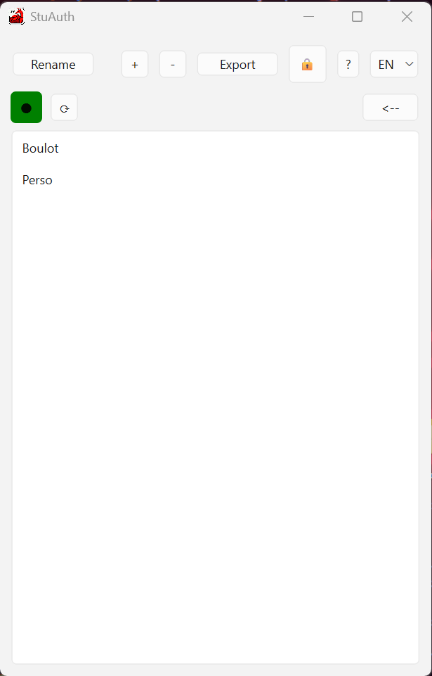

StuAuth
StuAuth — authentificateur TOTP/HOTP 100% local.
Pas de cloud, pas de sync forcée, pas de tracking.
OTP hors‑ligne
Import Google Authenticator
Stockage chiffré (AES‑256)
Sync LAN optionnelle
Windows / Linux / Android / Firefox
Licence MIT
Local. Offline.
Téléchargements directs
Captures d’écran
